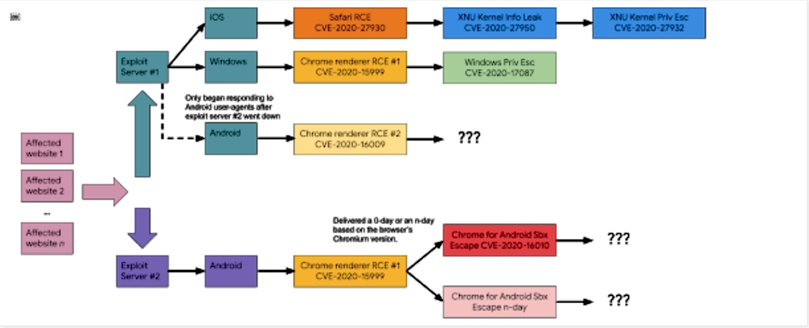

针对未知漏洞的漏洞利用程序花样百出，让这个黑客团伙与众不同。
谷歌研究人员说，一个高级黑客团队在为期 9 个月的攻击活动中利用了不少于 11 个零日漏洞，并通过被感染的网站去感染打过所有补丁的运行 Windows、iOS 和 Android 的设备。
依托先进的开发和伪装技术、利用各个漏洞类型并使用了一套复杂的投放框架，该团伙在 2020 年 2 月发现了四个零日漏洞。这伙黑客能够把攻陷了已全面打上补丁的 Windows 和 Android 设备的多个漏洞串联起来的能力让谷歌旗下 Project Zero 和威胁分析小组的成员们惊叹其“手法非常老到”。
周四，Project Zero 研究人员 Maddie Stone 表示，在 2 月份攻击发生后的八个月中，同一团伙利用了另外七个以前未知的漏洞，而这些漏洞至今还存在于 iOS 中。与 2 月份的情况如出一辙，黑客通过水坑式攻击（watering-hole attack）投放了漏洞利用程序。这些攻击破坏了目标用户经常访问的网站，并在这些网站上添加了用于将恶意软件安装在访问者设备上的代码。
在所有攻击中，水坑式站点都将访客重定向到一个庞大的架构。这个架构会根据访客使用的设备和浏览器，向用户的设备安装不同的漏洞利用程序。尽管二月份使用的两台服务器仅攻击了 Windows 和 Android 设备，但后来的攻击也针对了运行 iOS 的设备。下图展示了它的工作原理：

突破打过补丁的功能完善的操作系统，以及让应用程序内置的高级防御功能（例如，运行于 Windows 10 的 Chrome 和运行于 iOS 的 Safari）破防的能力证明了该团队的高超技能，也同时说明了这个团伙拥有的零日漏洞的数量之多。Google 修补了攻击者 2 月份在 Chrome 渲染器中利用的代码执行漏洞后，黑客迅速针对 Chrome V8 引擎的漏洞为他们的利用程序添加了新的代码。
在周四发表的博客中，Stone 写道：
从 JIT 的漏洞到大量的字体错误的缓存，这些漏洞涵盖了相当广泛的领域。总体而言，每个漏洞利用程序本身都体现出他们在漏洞利用程序开发和利用已知漏洞的领域方面的专业理解。Chrome Freetype 的零日病毒的漏洞利用方法对我们 Project Zero 来说是新颖的。弄清楚如何触发 iOS 内核特权漏洞的过程并非易事，因为伪装方法多种多样且难以短时间发现。
总而言之，Google 研究人员收集到以下信息：
- 1 条完整的会攻击运行 Google Chrome 的打上所有补丁的 Windows 10 的设备的漏洞攻击链
- 2 条会攻击运行 Google Chrome 和三星浏览器的打上补丁的 Android 10 设备的部分链
- 针对 iOS 11-13 的 RCE 漏洞利用程序和针对 iOS 13 的权限升级漏洞利用程序
这七个零日病毒是：
- CVE-2020-15999 —— Chrome Freetype 堆缓冲区溢出
- CVE-2020-17087 —— cng.sys 中的 Windows 堆缓冲区溢出
- CVE-2020-16009 —— TurboFan 地图弃用中的 Chrome 类型混淆
- CVE-2020-16010 —— 适用于 Android 的 Chrome 浏览器堆缓冲区溢出
- CVE-2020-27930 —— 通过 Type 1 字体进行 Safari 任意堆栈读取/写入
- CVE-2020-27950 —— mach 消息尾部中的 iOS XNU 内核内存泄露
- CVE-2020-27932 —— 借助 turnstiles 的 iOS 内核类型混淆
需要复杂的漏洞利用链才能突破现代操作系统和应用程序内置的防御层。通常，我们也需要一系列攻击以利用目标设备上的代码，使该代码脱离浏览器安全沙箱并提升特权，以便代码可以访问操作系统的敏感部分。
周四的帖子未提供负责袭击的组织的详细信息。我们特别想知道这些黑客是不是研究人员已经知道的某个团伙的成员，还是说这是之前未见过的团伙。有关被攻击对象的信息也很有用。
确保应用程序和操作系统处于最新版本状态，并避免去访问可疑网站依然很重要。但不幸的是，这些措施对于被这个来历不明的团伙攻击的受害者而言却毫无帮助。
如果发现译文存在错误或其他需要改进的地方，欢迎到 掘金翻译计划 对译文进行修改并 PR，也可获得相应奖励积分。文章开头的 本文永久链接 即为本文在 GitHub 上的 MarkDown 链接。
掘金翻译计划 是一个翻译优质互联网技术文章的社区，文章来源为 掘金 上的英文分享文章。内容覆盖 Android、iOS、前端、后端、区块链、产品、设计、人工智能等领域，想要查看更多优质译文请持续关注 掘金翻译计划、官方微博、知乎专栏。